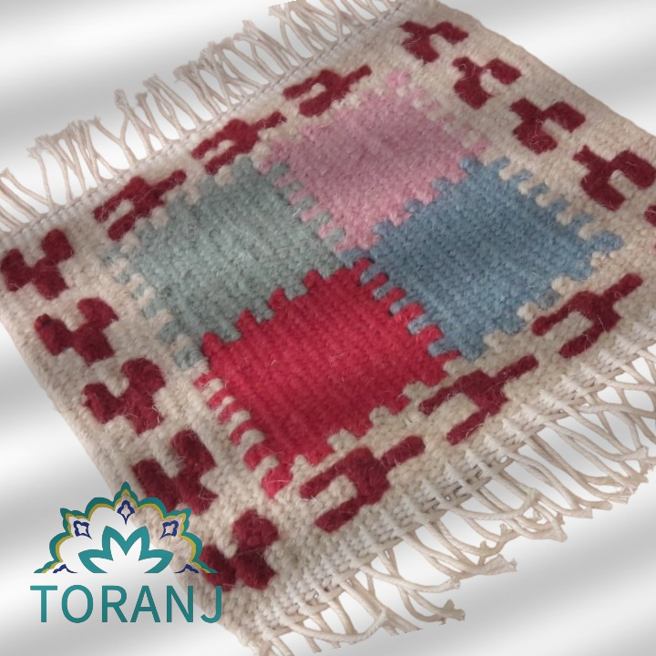
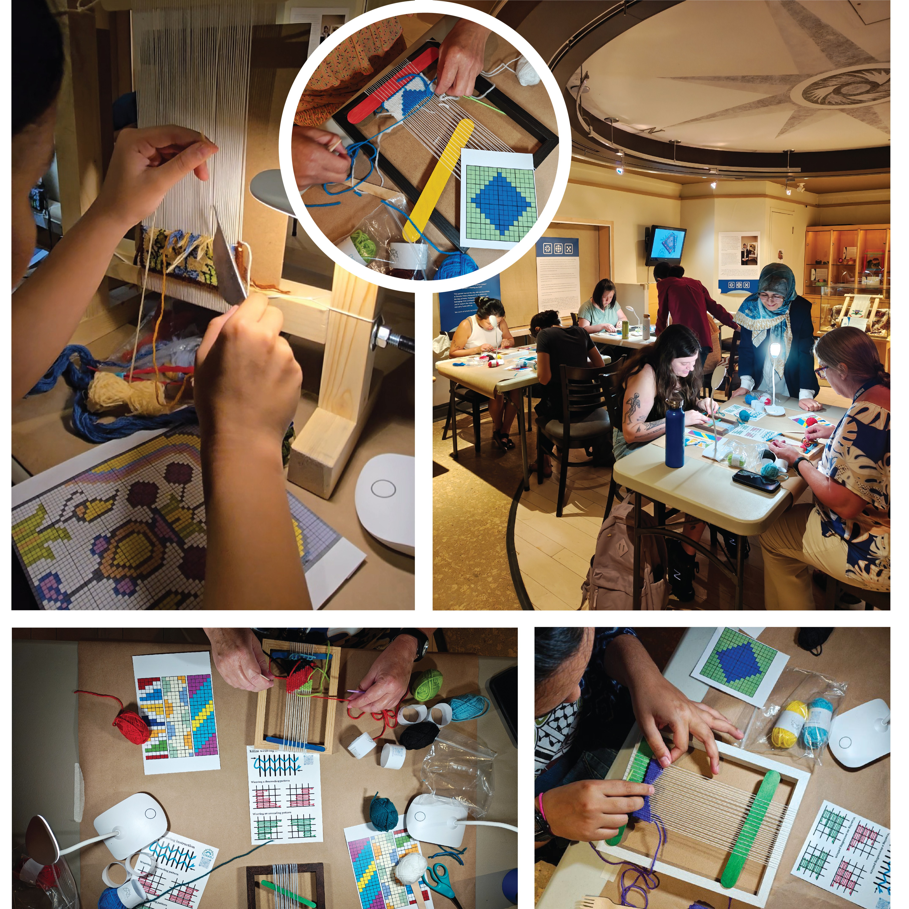

Check out all our upcoming workshops here!


Kilim Weaving Workshop
Something new this summer… and we’re so excited to share it with you! Toranj has been part of the GTA community for a while now, but this season, we’re bringing our Kilim Weaving Workshop to a beautiful new space at Pickering Museum.
Join us for a cozy, hands-on experience where you’ll learn the art of traditional weaving, slow down, and create something truly your own. No experience needed; just come curious!
Dates: July 12 and August 9
Time: 1:00 - 3:00 PM
Location: Pickering Museum
Spots are limited! Click below to save yours!


Community Kilim Mosaic: Weaving Together
Participants will learn to weave traditional Persian Kilim motifs into individual squares. These pieces will be collected and stitched into a large mosaic tapestry that reflects diverse community narratives.
Persian Kilims use symbolic motifs as a language of storytelling: for example, “Hands-on-Hips” represents fertility and “Running Water” signifies vitality. Aligned with the 2026 theme “Gather in Toronto,” this project frames the final textile as a physical expression of community. Weaving, historically a communal practice, brings participants together to learn a shared skill and interpret meaningful symbols through their own choices of color and technique.
While each square holds individual meaning, their combination-uniting symbols like the “Eye,” “Tree,” and “Bird”-creates a collective, resilient fabric. The workshop promotes equity and access through a non-verbal, tactile art form, supports dialogue across cultures, and results in a lasting textile archive representing the community gathered in 2026.
Dates:
August. 22nd, 29th, 2026
September. 12th, 19th, 2026
Time: TBD (2 hours each)
Location: Gibson House Museum
Spots are limited! Click below to save yours!
Registration will open soon!
Summer Threads: Persian Kilim Weaving Workshop
Join us at the Orkid Gallery Collection for a cozy summer gathering filled with colorful kilim weaving, refreshing conversations, and good energy. No previous experience is required; just bring yourself and your creativity!
What you’ll get:
- Step-by-step guidance from an experienced instructor
- All materials provided
- Your own unique handmade kilim to take home
Slow down, sip, weave, and connect. Make memories, create something beautiful, and enjoy a perfect summer afternoon. Spaces are limited. We can’t wait to weave with you!
Dates: July. 15th and 29th, 2026
Time: 5:00 PM - 7:00 PM (2 hours each)
Location: Orkid Gallery Collection
Spots are limited! Click below to save yours!